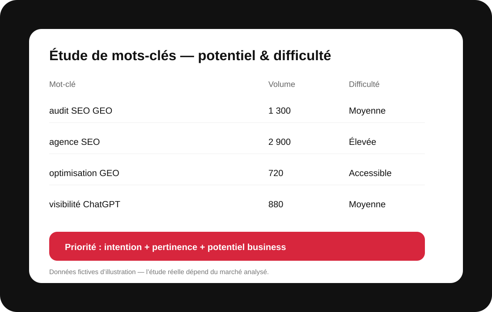

Étude de mots-clés : cibler les requêtes qui peuvent réellement générer du trafic
MinoSeo transforme les données de recherche en décisions éditoriales. Nous ne cherchons pas seulement les expressions les plus volumineuses : nous identifions les requêtes pertinentes pour votre activité, leur niveau de concurrence, leur intention et leur potentiel pour attirer une audience qualifiée.

Une étude de mots-clés conçue pour transformer la demande en opportunités de trafic
Des mots-clés reliés à vos objectifs commerciaux
Une étude de mots-clés efficace commence par vos offres, vos clients et les problèmes qu’ils cherchent à résoudre. MinoSeo construit un univers sémantique autour de vos produits, services, expertises et étapes du parcours de décision. Cette méthode évite les listes génériques de milliers de requêtes sans priorité et concentre l’effort sur les sujets qui peuvent soutenir la visibilité, la crédibilité et la conversion.
Volume de recherche : un indicateur, pas une finalité
Le volume aide à estimer la demande, mais il doit être interprété avec prudence. Une requête très recherchée peut être trop large, très concurrentielle ou peu pertinente pour votre offre. À l’inverse, une expression plus précise peut attirer moins de visiteurs mais correspondre beaucoup mieux à une intention commerciale. Nous mettons donc le volume en perspective avec la saisonnalité, le contexte du marché et la valeur potentielle de la visite.
Difficulté SEO et concurrence réelle
La difficulté SEO permet d’anticiper l’effort nécessaire pour concurrencer les résultats déjà visibles. Nous observons les pages positionnées, leur autorité, la qualité de leur contenu, le format dominant et l’adéquation avec l’intention. Cette analyse aide à distinguer les opportunités accessibles à court ou moyen terme des requêtes qui nécessitent un travail plus important de contenu, de technique et de netlinking.
Intention de recherche : comprendre ce que l’internaute veut accomplir
Deux mots-clés proches peuvent cacher des besoins très différents : apprendre, comparer, choisir un prestataire ou acheter. Nous regroupons les requêtes par intention afin d’associer chaque besoin au bon type de page : guide, page service, comparatif, FAQ ou contenu de décision. Cette cartographie réduit la cannibalisation et permet de construire un parcours logique entre contenus informationnels et pages commerciales.
Du fichier de mots-clés au plan éditorial
Le livrable doit être actionnable. Les requêtes sont regroupées en clusters thématiques, reliées aux pages existantes ou à créer, puis hiérarchisées selon pertinence, potentiel et difficulté. Le maillage interne est prévu dès cette étape : un guide peut soutenir une page service, tandis que les pages stratégiques renvoient vers des contenus qui répondent aux objections et questions des prospects.
Ce que nous analysons pour construire une recommandation exploitable
| Volume | Niveau de demande estimé | Dimensionner le potentiel |
|---|---|---|
| Volume | Niveau de demande estimé | Dimensionner le potentiel |
| Difficulté SEO | Force des résultats concurrents | Estimer l’effort nécessaire |
| Intention | Information, comparaison, transaction | Choisir le bon format de page |
| Pertinence business | Lien avec l’offre et la cible | Attirer un trafic utile |
| Cluster | Regroupement sémantique | Construire contenus et maillage |
Pour compléter l’étude, MinoSeo peut réaliser un audit SEO/GEO et repérer les questions émergentes du web à transformer en contenus.
Une approche sémantique précise, pédagogique et adaptée à votre marché
MinoSeo ne cherche pas seulement les mots-clés qui affichent les plus gros volumes. Nous rapprochons volume de recherche, difficulté SEO, intention, pertinence commerciale et capacité réelle de votre site à se positionner. L’objectif est de vous fournir une sélection de requêtes exploitable : celles à cibler en priorité, celles à travailler progressivement et celles à écarter lorsque le trafic serait trop éloigné de vos objectifs.
Le SEO et le GEO évoluent avec les usages, les moteurs et la concurrence. Aucune agence sérieuse ne peut garantir une position précise dans Google ou une citation dans une réponse IA. En revanche, il est possible de renforcer méthodiquement les fondations techniques, la qualité éditoriale, la compréhension de votre expertise et la mesure des résultats. C’est cette progression structurée que MinoSeo met au service de ses clients.
Vous souhaitez améliorer votre visibilité SEO & GEO ?
Présentez-nous votre site, vos priorités et vos objectifs. Nous vous proposerons un périmètre clair et des actions adaptées.
Une sélection de mots-clés gagne encore en valeur lorsqu’elle est confrontée à un audit SEO et GEO et à une stratégie d’optimisation des contenus.